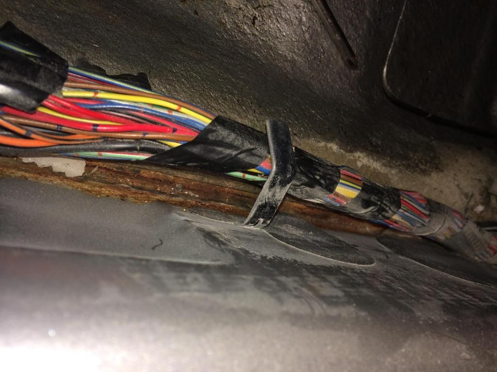
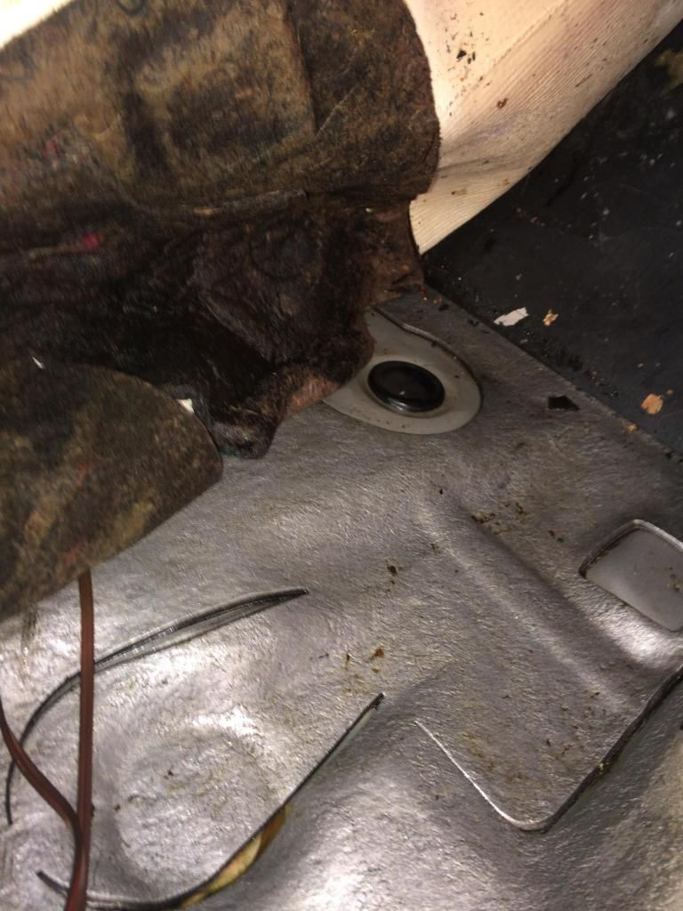
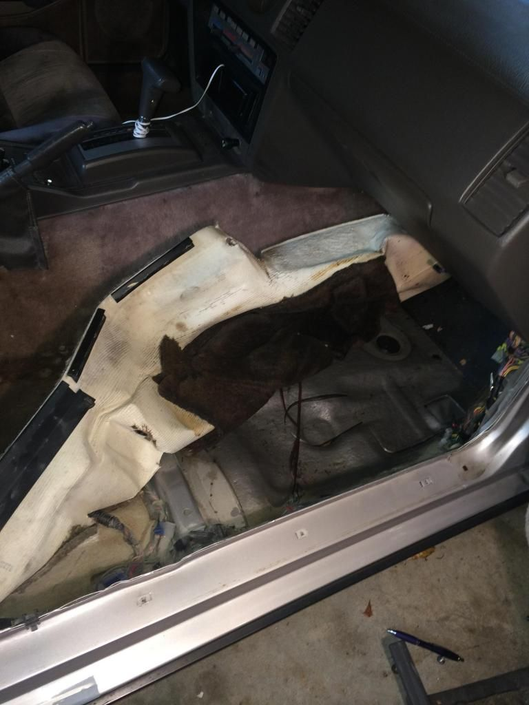

-
Okay, so a few weeks ago I was doing a total cleaning inside my Z's interior, and as I lifted up the floor mats, there was mold and it was really moist. To begin with I was really unsure as to what that exactly came from… I have no idea if that was like that ever since I got the car months ago, or if it was from T Tops leaking and the water collected somehow through the floormats onto the carpet. But here's why I'm confused. There is no moldy smell in my car, and the TTops don't even leak in that area. They only leak in the very back behind the seats. So all in all I'm not sure how water is getting there, and on top of it I saw a few weeks ago that water apparently drains from the car from between the side fenders (you know the ones underneath the door) and below the seat area?? I'm really confused and concerned as to what is going on here and I'm not sure if I should take out my floormats officially to try and help the problem of the moist carpet. I cleaned the floor mats and and carpet multiple times with resolve and mold remover but it's not really doing anything. Do I need to replace carpet entirely? I've checked the floor panels and they don't look rotted, except for the rust on the fender right below the front bottom edge of the doors, the same place where water drains out. I don't have pictures right now but i'll post some when I can. Someone please help me! -
Let's hope it's not the heater core. Are you losing coolant?Cha iro
enjoy building it yourself.
if it fails, fuck it.
at least you gave it a whirl. -
Yeah heater core or ac drain is a good guess. Could also have been build up from the leaking t tops.http://z31performance.com/showthread…2-2-(-now-NA2T
My build thread (: -
TTops or the top drains are clogged/leaking tubes. That's the only way the corners behind the seats can get wet.
1986 300ZX Turbo…sold
1990 Skyline GT-R…new money pit
2014 Juke Nismo RS 6-speed…daily -
Look for cracks in the seal around the rear drain hole.Originally posted by NissanEgg View Post
1988 300ZX Turbo, Shiro Special #760
1988 300ZX Turbo Automatic (wife's car)
1991 Hard-body 2WD
http://zccw.org/zccw/?page_id=1215 -
<iframe width="480" height="360" src="http://s1374.photobucket.com/user/Marissa_Simos/embed/slideshow/Z31"></iframe> okay so I'm hoping that link works… but if you can see the picture it's the bottom corner of the side fender right below the passenger's door. this is where water is leaking from and where it's rotting. could this be connected to my moist carpet? -
I'm thinking that's the only way I'll figure out whats going on. Only problem is I dont have money to replace the carpet (which I will need to replace if I take it out) and I'm not sure when my dad will let me take out the carpet, if he ever will. We did the shocks recently which were being really difficult, so we aren't gonna do a big job like this for a while, which bothers me. I heard removing the seats is pretty easy and quick though, so maybe I'll convince him soon. -
Its really stained, there's green moldy stuff beneath the floor mats, and personally I'd rather get a new one if I ever take the carpet out to see what's going on. -
So I recently had to remove my heater fan because it's intermittent and since that was out I decided to check the carpets again, especially since I haven't seen water come into my car for a while. As I removed the floor mat, I felt right underneath the heater fan and that area of the carpet was sticky, even though the floor mat above it was not. So, what could possibly making the carpet sticky? Could that somehow be from the heater core or is this just completely abnormal? I'm taking out my carpet soon. -
Sounds like your heater core is leaking. Could also explain the intermittent issues with your blower motor and heat. All pretty much in the same area.
Definitely something to look into before the leak gets worse and makes a bigger mess.'86 300ZXT GLL
'78 Datsun 280Z BP
'11 Saab 9-3 Aero XWD -
New carpets are not too bad, only $200 at the Z store. You probably don't have to take out the console or completely take out the carpets. Just move them back from the sides of the car and you should be able to see where the water is coming in from.Restore it, Don't crush it. They don't make them like this anymore.
Scott
85 Turbo, original owner, restored
93 NA Babied

-
Update: So I took apart my carpet and here's the conclusion I've came to. I know my T Top seals were terrible when I first bought the car, and when I took apart the carpet the padding beneath it was absolutely soaked. I think rain must've sat in the carpet while the other owner had the car, and so the water slowly went through the carpet and into the padding. From that point on the water really didn't have anywhere to go so the padding just absorbed it all. So after I lifted up the carpet I took a fan and I'm airing out the floor right now.
There's also a few questions I have. So in the very middle of the foot well there's this loop shape cut in the floor and there was a small puddle of water in it. Doe's anyone know what that's supposed to be? Second, theres a rubber plug in the left upper corner of the foot well, and I was tempted to open it today but I didn't want to risk it knowing my luck. Can anyone inform me on what these are for?  (also, while I was at it I saw some surface rust in the corner underneath the wires. I decided to sand it down and paint it, just to prevent it from getting worse. Saw someones post with that area completely rusted through and it terrified me.   -
The rubber plug is a drain, the loop shape in the sound deadening is a
punchout that wasn't used (the deadening surrounding the rubber plug is the same loop shape, missing the center)
I too just gutted an interior to track down and eliminate any leaks. It's the rainy season, i carry a couple of sham-wows
to soak up leaks.
84 AE/Shiro #683/Shiro #820/84 Turbo -
Looks like a drain plug. There's one that looks just like that under the inflatable tire.http://z31performance.com/showthread…2-2-(-now-NA2T
My build thread (: -
ah ok, I assumed so but I wanted to be safe. So If I take off that plug, would I be able to see the ground beneath it? I'm thinking to take off that plug for a day or two and then put it back on, don't want to leave it off and manage to get rust or dirt or debris from the road.

Copyright © 2006–. All rights reserved. Privacy Policy